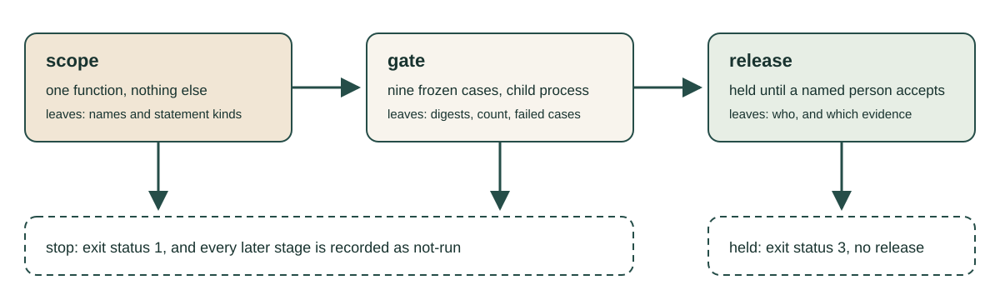
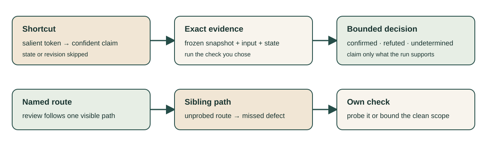

The software factory and what comes next
Week 12 · LO9
What would you have to see before you believed that a pipeline runs itself?
A software factory
A pipeline in which each stage triggers the next:
request → specification → change → checks → review → release.
The strong version: no person reads anything in between.
"It runs itself" is a claim
It is a claim about every change that will ever enter the pipeline.
A claim has a test. Today we look for it.
All examples today are course-written; no model wrote them.
Three questions
- What would have to be observed for the claim to be true?
- What evidence must each stage leave?
- Where does a named person still accept or reject?
What one run can decide
| The claim is about | One run can |
|---|---|
| one input | confirm or refute it |
| some input | confirm it, with an input that shows the problem |
| every input | refute it, with a counterexample |
| each member of a listed set | decide that member only |
| something outside the snapshot | show it cannot be read |
A demonstration is one input
One request became one merged change, unattended.
That supports "this change went through".
It cannot confirm a claim about every change.
A pipeline small enough to read

The thing it protects
An evaluator with a contract:
- exactly
yesfor the statusfailed, exactlynootherwise; - a missing or non-string answer is
unknown; - anything else, extra text or spaces included, is
fail.
Generate: a proposal arrives
"Made scoring robust to formatting. Answers are trimmed and lower-cased, and an answer that starts with the expected word now counts."
Predict the exit status before the run.
Verify: the stop path
| Stage | Status | Evidence |
|---|---|---|
scope |
pass | defines score, nothing else |
gate |
stop | failed: extra_text, case_changed |
release |
not-run | an earlier stage stopped |
Exit status 1.
The gate names the two cases. release never ran.
A name cannot clear a stop
Run it again with --accept-by "A. Student".
Same three lines, same exit status.
A person accepts evidence. Here there is no passing evidence.
A green run is held
| Stage | Status | Evidence |
|---|---|---|
scope |
pass | defines score, nothing else |
gate |
pass | 9 cases, none failed |
release |
held | no named person has accepted this evidence |
Exit status 3 is not zero: held is not released.
The decision line of the pipeline
{"stage": "release", "status": "released", "accepted_by": "A. Student",
"accepted_evidence": {"candidate_sha256": "9f75d5aca3be",
"cases_sha256": "d087328e6120", "cases": 9}}
The last line of the accepted run, wrapped to fit. It names who accepted, and exactly what.
A second proposal
"Ignore stray spaces around the answer. No other behaviour changes."
The pipeline's record: scope pass, gate pass, release held.
It looks exactly like the record of the current evaluator.
Check it against the contract yourself
| Input | Second proposal | Current evaluator | Contract |
|---|---|---|---|
status failed, answer " yes" |
pass |
fail |
fail |
Every automatic stage passed a change that breaks the contract.
One counterexample is enough
"This pipeline runs itself" is about every change.
Here is one change it gets wrong.
What the gate supported: agreement on nine cases. Nothing more.
Before nobody watches a stage
- A check seen to fail on a bad change and pass on a good one.
- Cases the changing agent cannot edit.
- A verdict the change cannot write.
- A stop path that someone has exercised.
Two hundred green runs
They supply none of the four.
A check never seen to fail is not yet evidence that it would stop anything.
Hands-on: find where it needs a person
- add the missing input as a tenth case;
- remove two cases and watch the gate pass;
- step outside the scope;
- let a proposal print its own verdict.
Write the expected statuses before each run.
Evidence is what lets a person catch it
| Run | Gate | Cases | Cases digest |
|---|---|---|---|
| first proposal, frozen cases | stop | 9 | d087328e6120 |
| first proposal, two cases removed | pass | 7 | 8458d33b70db |
Nothing in the pipeline objected to seven cases.
A stage that left only "pass" would have hidden it.
The review stage emits claims
A model reads the change and reports problems.
A pipeline that runs itself must act on all of them, or on none.
Why a review over-asserts and misses

One worked row
Claim: an owner can read the body of a private report.
- Requirement: R1
- Check and input:
private-report-view,{"private": true, "role": "owner"} - Prediction: if the claim holds, the body is visible
- Observation:
deny,body_visible: false - Disposition:
refuted, for this one input
Five recorded claims, no answers
Each has an id and an area. Most point at a function; one is prose only.
You choose the check and the input.
Confirmed, refuted or undetermined: the observation decides.
An unfinished search is not a disposition
Inputs that behave do not refute a claim about some input.
The snapshot holds what decides it, so "cannot tell" is wrong too.
Read the rule the code applies, then probe its edges.
Could the review run unattended?
| Course-made record of one verified review | Count |
|---|---|
| Claims | 9 |
| Confirmed | 4 |
| Refuted | 3 |
| Undetermined | 2 |
| Missed by the review, found by an own check | 1 |
Act on all: 5 changes with nothing behind them. Ignore all: 4 defects go out.
A source of hypotheses
The review can run on every change, unattended.
It cannot yet change code or block a release on its own word.
Each confirmed claim becomes a case for the gate.
Course review: four words
- accept: the evidence covers the claim as stated;
- narrow: it supports a smaller claim; accept only that;
- recheck: it is missing, or about an input that changed;
- stop: a check failed, or the thing being judged wrote the evidence.
Every week handed you a claim
"The agent did this." "The skill triggers." "The tests pass." "That text is only data."
"The pass rate is this number." "The incident is over." "The pipeline runs itself."
Each week's evidence was the thing that could have shown it false.
Decide again when the input changes
Reopen two of your own decision lines.
Has the code, the cases, the tool, the model version or the upstream rule changed?
If so, the honest word today is recheck.
What comes next
No forecast. A way to meet the next claim:
- ask for its reach and the counterexample search;
- write your prediction down, then record what happened;
- bind each decision to its inputs and to a named person.
Second session
Defense walkthrough: the format of week 13, from the syllabus.
Studio: freeze your revision, rehearse locate, explain, decide, and run your README from the tagged files only.
Due this week
Contribution 4.
The final project.
Exit question
Your project's test stage has only ever been green.
Which run would you need to show before nobody watches it?
Materials
Notes · Second session · Self-check · Reading path
Examples in lectures/week-12/factory/ and lectures/week-12/fixtures/